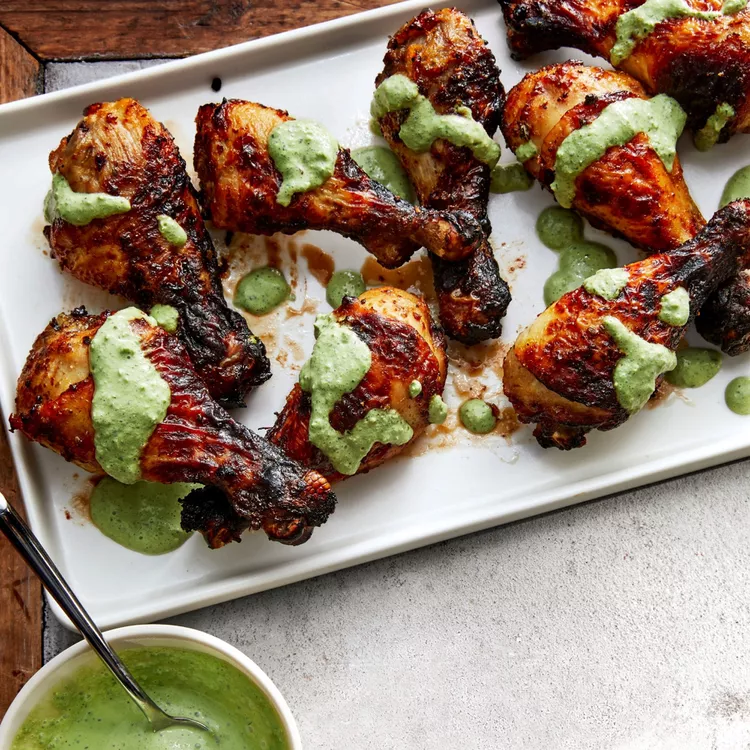

Air-Fried Peruvian Chicken Drumsticks with Green Crema

These air-fried Peruvian-style chicken drumsticks are served with a green crema made with spinach,
lime, cilantro, and some jalapeño to kick the heat up a notch.
Ingredients
- olive oil for brushing
- 1 tablespoon honey
- 1 tablespoon olive oil
- 2 cloves garlic, grated
- 1 teaspoon salt
- 1 teaspoon ground cumin
- ½ teaspoon smoked paprika
- ½ teaspoon dried oregano
- ¼ teaspoon ground black pepper
- 6 (4 ounce) chicken drumsticks
Crema Sauce
- 1 cup baby spinach leaves, stems removed
- ¾ cup sour cream
- ¼ cup cilantro leaves
- ½ jalapeno pepper, seeded
- 2 tablespoons fresh lime juice
- 1 clove garlic, smashed
- ¼ teaspoon salt
- ¼ teaspoon ground black pepper
Steps
- Brush an air fryer basket with olive oil.
- Combine honey, 1 tablespoon olive oil, garlic, salt, cumin, paprika, oregano, and
pepper in a large bowl. Add drumsticks; toss to coat. Arrange drumsticks
vertically in the prepared basket, leaning against the basket wall and one another.
- Cook in the air fryer at 400 degrees F (200 degrees C) until an instant-read thermometer
inserted in the thickest part of drumstick reads 165 degrees F (74 degrees C),
15 to 20 minutes. Rearrange drumsticks with kitchen tongs halfway through cooking for even cooking.
- Meanwhile, make sauce: Combine spinach, sour cream, cilantro, jalapeño, lime juice, garlic,
salt, and pepper in the bowl of a food processor; process until
crema sauce is smooth.
- Drizzle some crema sauce over drumsticks and serve with remaining crema.